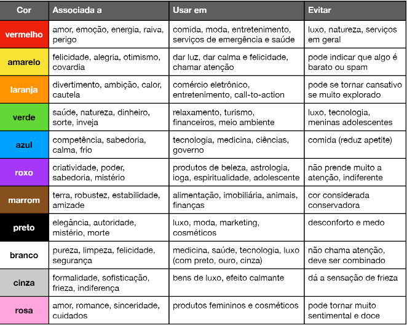

A Psicologia das Cores é um estudo que revela como o cérebro humano identifica e entende as cores de diferentes formas, influenciando em suas emoções, sentimentos e desejos. Podemos ver a atuação das cores na publicidade, arquitetura, moda, design, entre outros.
O sentimento que cada cor passa tem muito peso nos design dos nossos sites.